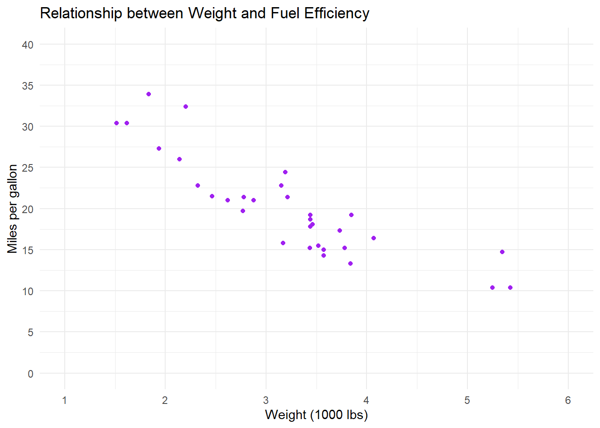
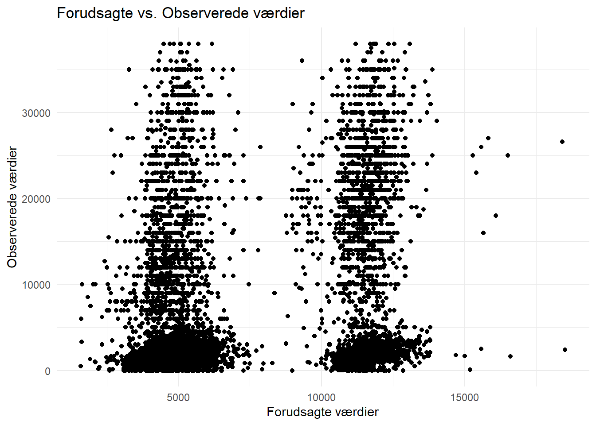

mit_foerste_objekt <- "Hello world!"Kodeoversigt
Statistik 15 ECTS, Ilisimatusarfik
Introduktion
Dette dokument giver en oversigt over grundlæggende kode og funktioner i R, som vi skal bruge i kurset. Det er en guide, der hjælper dig med at komme i gang med at oprette objekter, indlæse pakker, arbejde med datasæt, lave grundlæggende datavisualiseringer med ggplot2 og gennemføre de analyser, som vi arbejder med på kurset.
Du vil finde eksempler på, hvordan du kan arbejde med datasæt, omkode variable og lave forskellige typer af plots og analyser, som du kan tilpasse til dine egne data. Brug dokumentet som en opslagsbog, når du skriver din egen kode eller har brug for at forstå, hvordan specifikke funktioner fungerer.
Husk at du kan kopiere koden direkte fra dokumentet og tilpasse den til dine egne opgaver. Der er også inkluderet eksempler på, hvordan du gemmer dine resultater og visualiseringer.
Du kan benytte indholdsoversigten i højre side til at navigere i kodebogen, eller søge efter specifikke ord ved at trykke Ctrl+F (Windows) eller Cmd+F (Mac) og skrive et søgeord.
Objekter
I R er alt, hvad du arbejder med, et objekt. Det kan være tal, tekst, lister eller datasæt. Du opretter objekter, giver dem et navn og kan bruge dem senere.
Du opretter et objekt ved at give det et navn og skrive en pil til højre for navnet, og dernæst definere indholdet af objektet. F.eks. kan vi gemme et objekt, der hedder “mit_foerste_objekt” der indholder teksten “Hello world!”. Vi definerer objektet og dets indhold med en pil
Vi kan printe/vise indholdet at objektet ved at køre det i R konsollen eller scriptet:
mit_foerste_objekt[1] "Hello world!"Du kan naturligvis også gemme tal som objekter…
mit_tal <- 2
mit_tal[1] 2lave beregninger med dine objekter…
mit_tal + 2[1] 4og gemme dine resultater i objekter…
resultat <- mit_tal + 2
resultat[1] 4måske vigtigst af alt kan gemme datasæt (dataframes) i objekter:
df <- datasætPakker
I R indlæser vi pakker, der indeholder forskellige funktioner. Hver pakken skal installeres én gang, og derefter indlæses hver gang vi åbner R-Studio igen.
Installér pakker
Pakker installeres direkte i konsollen eller scriptet. Her indlæses f.eks. pakken tidyverse, der indeholder en masse gode data-funktioner:
install.packages('tidyverse')Man kan også indlæse flere pakker samtidig, f.eks. tidyverse OG janitor, som er god til bl.a. tabeller:
install.packages(c('tidyverse', 'janitor')) Indlæs pakker
Pakker indlæses med funktionen library() i dit script.
library('tidyverse') Man kan kun indlæse en enkelt pakke af gangen, med mindre man anskaffer sig en package-manager såsom pacmann. Pacman er selv en pakke, der f.eks. indeholder en funktion p_load til at indlæse flere andre pakker på en gang:
pacman::p_load(tidyverse, janitor)Datasæt
Indlæs datasæt
R kan som udgangspunkt kun finde datasæt, der er gemt i samme mappe, som den I arbejder i. Derfor er det smart at gemme sine datasæt og filer i samme mappe, som sit R project.
Hvis du er faret vild kan du bruge funktionen getwd() til at printe stien til den mappe, du arbejder i:
getwd()[1] "C:/Users/mmn/Dropbox/Ilisimatusarfik"For at indlæse datasæt skal I bruge specifikke funktioner, alt efter hvilket filformat datasættet er.
Til excel-filer:
library(readxl)
df_excelfil <- read_xlsx("excel_fil.xlsx")Til R-filer:
df_Rfil <- readRDS("r_fil.rds")Hvis dit datasæt ligger i en undermappe, der hedder data, skal du specificere det i stien:
df_Rfil <- readRDS("data/r_fil.rds")Eksempel
Indlæs f.eks. firmadatasættet med funktionen readRDS og gem datasættet i et objekt, der hedder df (for dataframe):
df <- readRDS("firma_data.rds")Åben dataset
Brug View() til at åbne datasættet som en tabel
View(df)Brug names() til at printe navnene på variablene i datasættet
names(df)[1] "navn" "industri" "ansatte" "omsaetning" "tilfredshed"Brug glimpse() til at få et overblik over variablene storage types i R:
library(dplyr)
glimpse(df)Rows: 1,000
Columns: 5
$ navn <chr> "Firm 1", "Firm 2", "Firm 3", "Firm 4", "Firm 5", "Firm 6"…
$ industri <fct> Finans, Finans, Sundhed, Sundhed, Finans, Produktion, Deta…
$ ansatte <int> 2766, 962, 4453, 1026, 2022, 2897, 2576, 1459, 1799, 4316,…
$ omsaetning <dbl> 801603.40, 53875.27, 493462.09, 765705.75, 239915.70, 3386…
$ tilfredshed <ord> Meget tilfreds, Meget utilfreds, Meget utilfreds, Utilfred…Data wrangling
En vigtig fordel i kodebaseret data software er, at vi kan skrive kode, der transformerer vores data til at se ud, præcis som vi vil have det. Det kaldes i folkemunde data wrangling!
Omdøbe variable
Når vi indlæser et datasæt kan det ofte være smart at sørge for, at variablenes navne er ensartede, så programmet kan læse dem. F.eks. er computere sjældent glade for mellemrum og æ,ø,å…
names(df)[1] "køn" "tid" "Befolkningen.1..januar"Brug clean_names() fra pakken library(janitor) til at ensarte variablenes navne, når du loader et nyt datasæt:
library(janitor)
df <- clean_names(df)
names(df)[1] "kon" "tid" "befolkningen_1_januar"I andre tilfælde vil vi gerne omdøbe variable manuelt. Brug rename() fra pakken library(tidyverse) til manuelt at omdøbe variable:
library(tidyverse)
df <- df %>% rename(koen = kon)
names(df)[1] "koen" "tid" "befolkningen_1_januar"Omkodning af variable
Man har ofte behov for at omkode/recode sine variable til færre/andre kategorier eller typer. Ofte vil vi gerne omkode mange variable på én gang. Derfor har pakken dplyr (under tidyverse) introduceret funktionen mutate().
Logikken er: mutate(df, ny_variabel = gammel_variabel)
Subsetting
Nogle gange er vi kun interesserede i at arbejde med særlige dele af vores datasæt. Måske er vi f.eks. kun interesseret i to variable fra vores datasæt, eller kun observationer med specifikke værdier på udvalgte variable. I de tilfælde kan vi lave “subsets” af vores datasæt, hvor vi udvælger de specifikke informationer, som vi gerne vil beholde. To nyttige funktioner i arbejde med datasæt/matricer er select() og filter()
Select() funktionen bruges til at udvælge kolonner/variable i datasættet. Hvis man f.eks. kun er interesseret i variablene koen og net_indkomst, kan man pipe sit dataset over i select(), vælge variablene og gemme dem i et nyt datasæt:
ny_df <- df %>% select(koen, net_indkomst)Mens select() uvælger kolonner/variable, kan man bruge filter() til at vælge rækker/observationer på baggrund af specifikationer. Hvis man f.eks. kun er interesseret i resultater for kvinder i sit datasæt, kan man pipe sit dataset over i filter() og dermed kun beholde observationer, der har værdien = “kvinde” på variablen “koen”:
kvinde_df <- df %>% filter(koen=="Kvinde")Gruppering af data
Somme tider er det nytting at aggregere sit datasæt i nogle grupper. group_by() bruges til at gruppere data efter én eller flere variabler, som allerede er i dit datasæt.
Funktionen laver grupper i datasættet, som derefter kan opsummeres eller manipuleres separat. Når dine data er grupperet, kan du bruge summarise() i forlængelse af groupby() til at beregne opsummeringer for hver gruppe. Eksempler på opsummeringer: gennemsnit, median, sum eller brugerdefinerede beregninger.
Vi kan f.eks. bruge groupby() til at gruppere uddannelsesniveau og derefter summarise() til at beregne gennemsnitsindkomsten og antal observationer for hver gruppe:
df %>% group_by(udd) %>%
summarise(Gennemsnitsindkomst = mean(net_indkomst, na.rm = TRUE),
N = n())# A tibble: 5 × 3
udd Gennemsnitsindkomst N
<ord> <dbl> <int>
1 Grundskole 4075. 3087
2 Ungdoms-/erhvervsuddannelse 5545. 4501
3 Mellemlang videregående 8627. 3934
4 Lang videregående 9401. 2148
5 <NA> 6909. 129Dummy-variable
Særligt i regressionsanalyse er det nyttigt at kunne omkode diskrete variable til dummy variable. Princippet med dummier er, at man konstruerer en binær variabel for hver kategori på en disktret variabel. Disse binære variable tager enten værdien 0 eller 1. En variabel for køn med to kategorier, Mand og Kvinde, kodes til to nye variable:
Mand
Kvinde
Respondenter med værdien “Kvinde” på den oprindelige variabel køn, tager værdien 1 på den nye variable Kvinde. Mænd tager værdien 0. Det omvendte gælder, på variablen Mand.
Før vi laver dummier af en diskret variabel, skal vi danne os et overblik over dens kategorier. Start derfor med at lave en tabel over kategorierne på variablen:
library(janitor)
tabyl(df$koen) df$koen n percent
Mand 6730 0.4877165
Kvinde 7069 0.5122835Variablen har to kategorier, “Mand” og “Kvinde”. Vi konstruerer derfor to nye variable - én for hver kategori på den oprindelige variabel - og tilføjer dem til datasættet. Vi bruger funktionerne mutate() og ifelse() til omkode og/eller at skabe nye variable og tilføje dem til datasættet.
df <- df %>% mutate(
mand = ifelse(koen=="Mand",1,0),
kvinde = ifelse(koen=="Kvinde",1,0))Vi har nu tilføjet to dummy-variable til datasættet:
df %>% select(koen, mand, kvinde) %>% head# A tibble: 6 × 3
koen mand kvinde
<fct> <dbl> <dbl>
1 Kvinde 0 1
2 Kvinde 0 1
3 Kvinde 0 1
4 Mand 1 0
5 Kvinde 0 1
6 Kvinde 0 1ggplot
ggplot2 er en datavisualiseringspakke i R. Den er bygget på grammar of graphics og giver fleksibilitet til at skabe avancerede plots. I skal bruge den til at bygge figurer!
De tre grundelementer i ggplot2
data: data, du vil plotteaes:kortlægning af variabler (aesthetic mappings)geom: plot-type, f.eks. søjlediagram, scatterplot, eller boksplot
ggplot2 er som at bygge med LEGO-klodser: Du tilføjer forskellige lag for at skabe det endelige plot. Hvert lag bygger på det forrige og tilføjer nye visuelle elementer. Basen er data, og derfra bygger du videre med lag som akser, farver og geometriske former
ggplot(data = <DATA>) +
aes(x = <X-variabel>, y = <Y-variabel>) +
geom_<GEOM>()Typer af plots
Der findes mange typer af plots eller geoms, som er gode til forskellige ting. Her er et par grundlæggende:
Visualisering af én variabel
Brug
geom_bar()til kategoriske variableBrug
geom_histogram()ellergeom_boxplottil nummeriske variable
Visualisering af flere variable
Brug
geom_bar()ellergeom_jitter()til to kategoriske variableBrug
geom_boxplottil en nummerisk variabel og en kategoriske variabel.Brug
geom_point()til to nummeriske variable.
Nedenfor illustreres hver plottype med udgangspunkt i datasættet mtcars (built in datasæt på biler).
df <- mtcarsBarplot (univariat)
Variablen cyl (antal cylindre), som er en kategorisk variabel, kan visualiseres via. et barplot:
library(ggplot2)
ggplot(df) +
aes(x = factor(cyl)) + # Erstat cyl med din variabel
geom_bar(fill = "#003366") +
labs(
title = "Antal biler pr. antal cylindere",
x = "Antal cylindre",
y = "Antal biler"
) +
theme_minimal()
Histogram (univariat)
Variablen mpg (miles per gallon), som er en numerisk, kan visualiseres via. et histogram:
library(ggplot2)
ggplot(df) +
aes(x = mpg) + # Erstat mpq med din variabel
geom_histogram(fill = "#003366") +
labs(
title = "Histogram af brændstoføkonomi",
x = "Miles per gallon (mpg)",
y = "Antal biler"
) +
theme_minimal()`stat_bin()` using `bins = 30`. Pick better value with `binwidth`.
Boksplot (univariat)
Variablen mpg (miles per gallon), som er en numerisk, kan også visualiseres via. et boksplot:
ggplot(df) +
aes(x = "", y = mpg) + # Erstat mpq med navnet på din variabel.
geom_boxplot(fill = "#003366", color = "black") + # Ændring af farver
labs(
title = "Boksplot af brændstoføkonomi",
x = "", # Tomt for at undgå en x-akse etiket
y = "Miles per gallon (mpg)"
) +
theme_minimal()
Barplot (bivariat)
Vi kan visualisere sammenhængen mellem variablene cyl (antal cylindre) og gear (antal gear), som begge er kategoriske variabler via barplot():
library(ggplot2)
ggplot(df) +
aes(x = factor(cyl), fill = factor(gear)) + # Erstat cyl og gear med dine variable
geom_bar(position = "dodge") +
labs(
title = "Fordeling af biler pr. cylinder og gear",
x = "Antal cylindre",
y = "Antal biler",
fill = "Antal gear"
) +
theme_minimal()Jitter-plot (bivariat)
Vi kan også visualisere sammenhængen mellem cyl (antal cylindre) og gear (antal gear) via geom_jitter(). Et jitter-plot er en variant af et scatterplot, hvor punkterne bliver “spredt” (jittered) lidt tilfældigt, når de overlapper hinanden:
library(ggplot2)
ggplot(df) +
aes(x = factor(cyl), y = factor(gear)) + # Erstat cyl og gear med dine variable
geom_jitter(width = 0.2, height = 0.2) +
labs(
title = "Spredning af biler mellem cylinder og gear",
x = "Antal cylindre",
y = "Antal gear"
) + theme_minimal()
Boksplot (bivariat)
Vi kan bruge et boksplot til at se fordelingen af variablene mpg (nummerisk) over cyl (kategorisk):
library(ggplot2)
ggplot(df) +
aes(x = factor(cyl), y = mpg) + # Erstat cyl og mpg med dine variable
geom_boxplot() +
labs(
title = "Brændstoføkonomi pr. cylinder",
x = "Antal cylindre",
y = "Miles per gallon"
) +
theme_minimal()
Scatterplot (bivariat)
Og vi kan bruge et scatterplot til at se sammenhængen mellem variablene wt (vægt) og mpg (miles per gallon), som begge er numeriske variabler med geom_point():
library(ggplot2)
ggplot(df) +
aes(x = wt, y = mpg) + # Erstat wt og mpg med dine variable
geom_point() +
labs(
title = "Sammenhæng mellem vægt og brændstoføkonomi",
x = "Vægt (1000 lbs)",
y = "Miles per gallon"
) +
theme_minimal()
Scatterplot (bivariat) med regressionslinje
Det er også muligt at lægge flere plots ovenpå hinanden med ggplot. F.eks. kan I lægge en regressionslinje indover jeres scatterplot med geom_smooth() :
library(ggplot2)
ggplot(df) +
aes(x = wt, y = mpg) + # Erstat wt og mpg med dine variable
geom_point() +
geom_smooth(method = "lm", color = "blue", se = FALSE) + # Tilføjer en lineær regressionslinje
labs(
title = "Sammenhæng mellem vægt og brændstoføkonomi",
x = "Vægt (1000 lbs)",
y = "MPG"
) +
theme_minimal()
Ændring af plot-udseende
ggplots kan nemt ændres ved at tilføje elementer til graferne (ligesom LEGO-klodser). Nedenfor illustreres et par typiske ændringer, med udgangspunkt i et simpelt plot, der kortlægger variablene wt (vægt) til x-aksen og mpg (miles per gallon) til y-aksen:
library(ggplot2)
ggplot(data = df) +
aes(x = wt, y = mpg) + # Erstat wt og mpg med dine variable
geom_point()
Man kan bruge funktionen labs() til at tilføje titel og asketitler:
library(ggplot2)
ggplot(data = df) +
aes(x = wt, y = mpg) + # Erstat wt og mpg med dine variable
geom_point() +
labs(
title = "Relationship between Weight and Fuel Efficiency",
x = "Weight (1000 lbs)",
y = "Miles per gallon"
)
Man kan ændre dine plots visuelle udseende med themes(). Man kan f.eks. ændre baggrunde, akser, tekst, grids, osv., ved at bruge forskellige temaer ggplot2 kommer med flere indbyggede temaer, f.eks. theme_minimal():
library(ggplot2)
ggplot(data = df) +
aes(x = wt, y = mpg) + # Erstat wt og mpg med dine variable
geom_point() +
labs(
title = "Relationship between Weight and Fuel Efficiency",
x = "Weight (1000 lbs)",
y = "Miles per gallon") +
theme_minimal()
Det er ofte nødvendigt at skrue på værdierne på akserne. Afhængigt af hvilken akse man vil justere bruger man:
scale_x_discrete(): Bruges til diskrete (kategoriske) værdier på x-aksenscale_x_continuous(): Bruges til kontinuære (numeriske) værdier på x-aksenscale_y_discrete(): Bruges til diskrete værdier på y-aksenscale_y_continuous(): Bruges til kontinuære værdier på y-aksen.
library(ggplot2)
ggplot(data = df) +
aes(x = wt, y = mpg) + # Erstat wt og mpg med dine variable
geom_point() +
labs(
title = "Relationship between Weight and Fuel Efficiency",
x = "Weight (1000 lbs)",
y = "Miles per gallon") +
theme_minimal()+
scale_x_continuous(limits = c(1, 6), breaks = seq(1, 6, by = 1)) +
scale_y_continuous(limits = c(0, 40), breaks = seq(0, 40, by = 5)) Man kan også ændre farver på sine ggplots. Afhængigt af hvilken type geometrisk objekt du arbejder med, bruger man fill() eller color(). color() ændrer kantfarver og punktfarver, fill() ændrer fyldfarver på objekter, der har en indre fyldning. I et scatterplot med punkter bruges color():
library(ggplot2)
ggplot(data = df) +
aes(x = wt, y = mpg) + # Erstat wt og mpg med dine variable
geom_point(color="purple") +
labs(
title = "Relationship between Weight and Fuel Efficiency",
x = "Weight (1000 lbs)",
y = "Miles per gallon") +
theme_minimal()+
scale_x_continuous(limits = c(1, 6), breaks = seq(1, 6, by = 1)) +
scale_y_continuous(limits = c(0, 40), breaks = seq(0, 40, by = 5)) 
Man kan ændre tekst-størrelsen på plottets elementer med theme():
library(ggplot2)
ggplot(data = df) +
aes(x = wt, y = mpg) + # Erstat wt og mpg med dine variable
geom_point(color="purple") +
labs(
title = "Relationship between Weight and Fuel Efficiency",
x = "Weight (1000 lbs)",
y = "Miles per gallon"
) +
theme_minimal() +
scale_x_continuous(limits = c(1, 6), breaks = seq(1, 6, by = 1)) +
scale_y_continuous(limits = c(0, 40), breaks = seq(0, 40, by = 5))+
theme(
plot.title = element_text(size = 18), # Ændrer titelstørrelsen
axis.title.x = element_text(size = 14), # Ændrer størrelsen på x-aksetitlen
axis.title.y = element_text(size = 14), # Ændrer størrelsen på y-aksetitlen
axis.text.x = element_text(size = 12), # Ændrer størrelsen på x-akse tekst (ticks)
axis.text.y = element_text(size = 12)) # Ændrer størrelsen på y-akse tekst (ticks)
Nogle gange kan det også være nyttigt at rotere sit plot med coord_flip():
library(ggplot2)
ggplot(data = df) +
aes(x = wt, y = mpg) + # Erstat wt og mpg med dine variable
geom_point(color="purple") +
labs(
title = "Relationship between Weight and Fuel Efficiency",
x = "Weight (1000 lbs)",
y = "Miles per gallon"
) +
theme_minimal() +
scale_x_continuous(limits = c(1, 6), breaks = seq(1, 6, by = 1)) +
scale_y_continuous(limits = c(0, 40), breaks = seq(0, 40, by = 5))+
theme(
plot.title = element_text(size = 18), # Ændrer titelstørrelsen
axis.title.x = element_text(size = 14), # Ændrer størrelsen på x-aksetitlen
axis.title.y = element_text(size = 14), # Ændrer størrelsen på y-aksetitlen
axis.text.x = element_text(size = 12), # Ændrer størrelsen på x-akse tekst (ticks)
axis.text.y = element_text(size = 12)) + # Ændrer størrelsen på y-akse tekst (ticks)
coord_flip() # Roterer akserneGem dit ggplot
Standardmetoden til at gemme ggplot-grafer er ved hjælp af ggsave() funktionen. Først gemmes dit plot som et objekt, dernæst bruges ggsave() med følgende syntaks:
ggsave("mit_plot.jpeg", # Erstat med navnet du vil gemme .jpeg filen som
plot = mit_ggplot_objekt, # Erstat mit_ggplot_objekt med navnet på det objekt, du har gemt dit plot i
width = 10, height = 8)mit_ggplot_objekter navnet på det objekt, du har gemt dit plot iggsave()kan gemme i forskellige filformater: JPEG, PNG, PDF, TIFF osv.Gem som udgangspunkt i JPEG
Juster størrelse med
widthogheight(i tommer).
Medmindre du specificerer en anden lokation på computeren gemmes plottet i den mappe, som du arbejder i (tjek evt. med getwd()).
Tabeller
Envejstabeller
Brug funktionen tabyl() fra pakken janitor til at lave tabeller. Du kan f.eks. lave en envejstabel med frekvenser og andele på variablen udd fra ESS datasættet således:
library(janitor)
tabyl(df, udd) udd n percent valid_percent
Grundskole 3087 0.223711863 0.2258230
Ungdoms-/erhvervsuddannelse 4501 0.326183057 0.3292612
Mellemlang videregående 3934 0.285093123 0.2877835
Lang videregående 2148 0.155663454 0.1571324
<NA> 129 0.009348504 NATovejstabeller/krydstabeller
En tabel med to variable kaldes også en tovejs-tabel eller en krydstabel. En krydstabel er en tabel, der organiserer data for to kategoriske variable og viser, hvordan observationer fordeler sig i kombination af de to variable.
Brug funktionen tabyl() fra pakken janitor til at lave tabeller. Du kan f.eks. lave en krydstabel med R datasættet Titanic over passageres klasse og overlevelse:
library(janitor)
tabyl(df, Class, Survived) Class No Yes
1st 4 4
2nd 4 4
3rd 4 4
Crew 4 4# Erstat variablene class og survived med navnene på dine variableTilføj totaler (både rækker og kolonner) med adorn_totals():
library(janitor)
tabyl(df, Class, Survived) %>% adorn_totals(where = c("row", "col")) Class No Yes Total
1st 4 4 8
2nd 4 4 8
3rd 4 4 8
Crew 4 4 8
Total 16 16 32# Erstat variablene class og survived med navnene på dine variableTilføj procenter med adorn_percentages() og bestem antal decimaler med adorn_pct_formatting():
library(janitor)
tabyl(df, Class, Survived) %>%
adorn_totals(where = c("row", "col")) %>%
adorn_percentages() %>%
adorn_pct_formatting(digits = 1) Class No Yes Total
1st 50.0% 50.0% 100.0%
2nd 50.0% 50.0% 100.0%
3rd 50.0% 50.0% 100.0%
Crew 50.0% 50.0% 100.0%
Total 50.0% 50.0% 100.0%# Erstat variablene class og survived med navnene på dine variableGem din tabel som excel-fil
Du kan eksportere din både envejs- og tovejstabeller til Excel med writexl-pakken ved at gemme tabellen i et objekt og bruge funktionen write_xlxs():
min_tabel <- tabyl(df, udd)
library(writexl)
write_xlsx(list("Min tabel" = min_tabel), "min_tabel.xlsx")Univariat analyse
Centrummål
Mål for en variabels centrale tendens siger noget om en ”typiske” værdi på variablen. Man taler oftest om tre centrummål:
Typetal: den værdi, der optræder flest gange (kaldes også modus eller modalværdi)
Middelværdi/gennemsnit: \(\bar{x} = \frac{1}{N} \sum_{i=1}^{N} x_i\)
Median: værdien af den midterste observation på en variabel eller gennemsnittet mellem de to midterste (den værdi, der deler enhederne i to lige store dele).
Typetal/modus
Vi kan bruge Mode() funktionen fra pakken DescTools til at finde typetallet. Vi er dog nødt til at fortælle funktionen, at den skal ignorere missing-værdier, før den virker, ved at skrive: na.rm = TRUE.
library(DescTools)
Mode(df$udd, na.rm = TRUE) [1] Ungdoms-/erhvervsuddannelse
attr(,"freq")
[1] 4501
4 Levels: Grundskole < ... < Lang videregående# df er navnet på objektet med datasættet, udd er navnet på variablenMode() fortæller os at modus på variablen uddannelse er Ungdoms-/erhvervsuddannelse, og at det optræder 4501 gange i datasættet.
Gennemsnit/middelværdi
Du kan finde middelværdien af en intervalskaleret variabel med funktionen Mean(). Igen er vi nødt til at fortælle funktionen, at den skal ignorere missing-værdier, før den virker, ved at skrive: na.rm = TRUE
library(DescTools)
Mean(df$alder, na.rm = T) [1] 50.78924# df er navnet på objektet med datasættet, alder er navnet på variablenMedian
Du kan finde medianen på en ordinal- eller intervalskaleret variabel med funktionen Median(). Igen er vi nødt til at fortælle funktionen, at den skal ignorere missing-værdier, før den virker, ved at skrive: na.rm = TRUE
library(DescTools)
Median(df$alder, na.rm=T)[1] 52# df er navnet på objektet med datasættet, alder er navnet på variablenFraktiler
Hvis du er interesseret i andre fraktiler kan du bruge funktionen quantile(). Hvis det f.eks. gerne vil have kvartiler på en variable, kan du specificere følgende fraktiler:
quantile(df$alder, probs = c(0.25, 0.5, 0.75), na.rm = TRUE)25% 50% 75%
35 52 66 # df er navnet på objektet med datasættet, alder er navnet på variablenAll-in-one summary
En god funktion er summary() som viser: minimum (Min.), første kvartil (1st Qu.), median (Median), gennemsnit (Mean), tredje kvartil (3rd Qu.), maximum (Max.), og manglende værdier (NA):
summary(df$alder) Min. 1st Qu. Median Mean 3rd Qu. Max. NA's
15.00 35.00 52.00 50.79 66.00 90.00 20 # df er navnet på objektet med datasættet, alder er navnet på variablenSpredningsmål
Udover den ”typiske værdi” er det informativt at undersøge spredningen på en variabel, dvs. hvor langt de forskellige enheders værdier ligger fra hinanden. Spredningsmål siger altså noget om variationen i data, og beskæftiger sig med, hvor meget observationerne afviger fra middelværdien.
Du kan finde variansen på en variabel med funktionen Var():
Var(df$alder, na.rm = TRUE)[1] 360.6049# df er navnet på objektet med datasættet, alder er navnet på variablenEller standardafvigelsen med funktionen sd():
sd(df$alder, na.rm = TRUE)[1] 18.9896# df er navnet på objektet med datasættet, alder er navnet på variablenKonfidensintervaller
Man kan bruge funktionen t.test() til at udregne konfidensintervaller (95 % konfidensintervaller er standard):
t.test(df$alder)
One Sample t-test
data: df$alder
t = 313.95, df = 13778, p-value < 2.2e-16
alternative hypothesis: true mean is not equal to 0
95 percent confidence interval:
50.47215 51.10634
sample estimates:
mean of x
50.78924 # df er navnet på objektet med datasættet, alder er navnet på variablenKonfidensintervallerne fortæller os, at populationsgennemsnittet \(\mu\) med 95% sandsynlighed ligger i intervallet \(50,47\) og \(51,1\) år.
T-test for univariat analyse
I univariat analyse kan man anvende t-testen til formelt at teste, om gennemsnittet i ens stikprøve er signifikant forskelligt fra en forventet værdi (f.eks. Hvis du har viden om populationens sande gennemsnit). Vi bruger funktionen t.test().
Vi kan f.eks. teste om gennemsnitsalderen i stikprøven (\(\bar{x}\)) er signifikant forskellig fra gennemsnitsalderen i populationen i 2020: \(\mu=42,8\). Hypoteserne for en univariat t-test er:
- H0: Stikprøvegennemsnittet er lig populationens/det forventede gennemsnit, \(\bar{x}=μ\)
- H1: Stikprøvegennemsnittet er forskelligt fra populationens/det forventede gennemsnit \(\bar{x}\ne \mu\)
ttest_resultat_univariat <- t.test(df$alder, mu = 42.8)
# df er navnet på objektet med datasættet, alder er navnet på variablen
# Opret en data frame med de ønskede metrics i rækker
(ttest_tabel_univariat <- data.frame(
Parameter = c("Gennemsnit", # Gennemsnittet af prøven
"Test-statistik", # Teststatistikken (t-værdien)
"P-værdi", # P-værdien med 4 decimaler
"Nedre konfidensinterval", # Nedre konfidensinterval for konfidensintervallet
"Øvre konfidensinterval", # Øvre konfidensinterval for konfidensintervallet
"Frihedsgrader"), # Frihedsgrader (df)
Værdi = c(
round(ttest_resultat_univariat$estimate, 3), # Gennemsnittet afrundet til 3 decimaler
round(ttest_resultat_univariat$statistic, 3), # Teststatistikken afrundet til 3 decimaler
sprintf("%.3f", ttest_resultat_univariat$p.value), # P-værdi med 3 decimaler
round(ttest_resultat_univariat$conf.int[1], 3), # Nedre konfidensinterval afrundet til 3 decimaler
round(ttest_resultat_univariat$conf.int[2], 3), # Øvre konfidensinterval afrundet til 3 decimaler
round(ttest_resultat_univariat$parameter, 1) # Frihedsgrader afrundet til 1 decimal
)
)) Parameter Værdi
1 Gennemsnit 50.789
2 Test-statistik 49.385
3 P-værdi 0.000
4 Nedre konfidensinterval 50.472
5 Øvre konfidensinterval 51.106
6 Frihedsgrader 13778Da p-værdien er under 0,05 forkaster vi nulhypotesen og konkluderer vi, at gennemsnitsalderen i stikprøven (\(\bar{x}\)) er signifikant lavere end den forventede værdi (gennemsnitsalderen i populationen, \(\mu\)).
Du kan samle outputtet fra t-testen i en lidt pænere tabel og eksportere den, ved at følge nedenstående kode:
library(writexl)
write.csv(ttest_tabel_univariat, "t_test_resultat_univariat.csv", row.names = FALSE)
# ttest_resultat_univariat er navnet på objektet med tabellen med t-test resultatet\(\chi^2\)-test for univariat analyse (goodness of fit)
Ordinal og nominalskalerede variable har ikke gennemsnit og varians uafhængigt af vores nummerering og derfor er disse meningsløse. T-testen er derfor også meningsløs. I stedet tester vi, om fordelingen mellem variablens kategorier er forskellig fra en forventet fordeling.
Testen hedder χ² – udtales ‘Chi i anden’ eller goodness of fit. Vi bruger \(\chi^2\) goodness of fit testen til at teste, om fordelingen på variablen i stikprøven stemmer overens med en forventet fordeling. F.eks. kan vi teste, om uddannelsesfordelingen i stikprøven stemmer overens med en forventet uddannelsesfordeling.
Hypoteserne i en goodness-of-fit test er:
- H0: Den observerede fordeling er ikke signifikant forskellig fra den forventede fordeling
- H1: Den observerede fordeling er signifikant forskellig fra den forventede fordeling
Den observerede fordeling i stikprøven er:
library(janitor)
tabyl(df$udd) df$udd n percent valid_percent
Grundskole 3087 0.223711863 0.2258230
Ungdoms-/erhvervsuddannelse 4501 0.326183057 0.3292612
Mellemlang videregående 3934 0.285093123 0.2877835
Lang videregående 2148 0.155663454 0.1571324
<NA> 129 0.009348504 NADe observerede værdier er antallet i hver kategori \((n)\), og den forventede fordeling er en sandsynlighedsfordeling \((p)\).
De observerede værdier fra tabellen er:
observeret <- c(3087, 4501, 3934, 2148)Den forrventede fordeling på variablen udtrykkes som andele, f.eks. 15% grundskole, 30% Ungdoms-/erhvervsuddannelse, 30 % mellemlang videregående, 25 % lang videregående:
forventet_andele <- c(0.15, 0.30, 0.30, 0.25) Brug funktionen chisq.test() for at sammenligne de observerede værdier med de forventede, og gem resultaterne i en tabel med følgende kode:
chi_test_univariat <- chisq.test(x = observeret, p = forventet_andele)
# Formatér test-resultater og gem som tabel
(chi_tabel_univariat <- data.frame(
Parameter = c("Chi-squared", "Frihedsgrader", "p-værdi"),
Værdi = c(formatC(chi_test_univariat$statistic, format = "f", digits = 3), # Chi-squared værdi
chi_test_univariat$parameter, # Frihedsgrader
formatC(chi_test_univariat$p.value, format = "f", digits = 3)) # p-værdi
)) Parameter Værdi
X-squared Chi-squared 1041.334
df Frihedsgrader 3
p-værdi 0.000P-værdien på 0,000 er under 0,05 og vi afviser dermed nulhypotesen og konkluderer, at uddannelsesfordelingen i stikprøven er signifikant forskellig fra den forventede fordeling.
Du kan som altid eksportere tabellen med dine resultater fra testen til excel med write.csv():
library(writexl)
write.csv(chi_tabel_univariat, "chi_test_univariat.csv", row.names = FALSE)
# chi_tabel_univariat er navnet på objektet med tabellen med chi-test resultatetBivariat analyse
Korrelationskoefficienter
Cramers v
Når der indgår en nominalskala variabel anbefales det at bruge korrelationsmålet Cramer’s \(V\). Denne korrelationskoefficient ligger mellem \(0\) og \(1\). Brug funktionen CramerV fra pakken DescTools:
Eksempel med køn og ansættelsestype fra European Social Survey:
krydstabel <- table(as.character(df$koen),
as.character(df$ansaettelse_type))
# Erstat koen og ansaettelse_type med dine variable
library(DescTools)
CramerV(krydstabel)[1] 0.1169228- Cramer’s \(V=0.12\)
- Der ser ud til at være en svag sammenhæng mellem køn og ansættelsestype.
Spearman’s rho
Til to ordinale variable bruges korrelationskoefficienten Spearman’s Rho og funktionen cor.test() :
Eks: Eget uddannelsesniveau og partners uddannelsesniveau:
cor.test(as.numeric(df$udd),
as.numeric(df$udd_partner),
method = "spearman")
Spearman's rank correlation rho
data: as.numeric(df$udd) and as.numeric(df$udd_partner)
S = 83376532, p-value < 2.2e-16
alternative hypothesis: true rho is not equal to 0
sample estimates:
rho
0.5101004 # Erstat udd og udd_partner med dine variable\(rho=0.5\)
Der ser ud til at være en ret solid positiv sammenhæng mellem folks eget og deres partners uddannelsesniveau
Pearsons r
Til to intervalskalerede variable bruges korrelationskoefficienten Pearson’s \(r\) og funktionen cor.test():
Eks. Indkomst og antal års uddannelse.
cor.test(df$udd_aar, df$net_indkomst)
Pearson's product-moment correlation
data: df$udd_aar and df$net_indkomst
t = 9.2884, df = 1201, p-value < 2.2e-16
alternative hypothesis: true correlation is not equal to 0
95 percent confidence interval:
0.2053692 0.3108539
sample estimates:
cor
0.2588832 # Erstat udd_aar og net_indkomst med dine variable- \(Pearsons=0.26\)
- Der ser ud til at være en svag/moderat positiv sammenhæng mellem indkomst og antal års uddannelse.
T-test for forskelle på to gennemsnit
Hvis vi har en skala variabel kan vi bruge hypotesetest til at undersøge, om middelværdien på denne variabel er forskellig mellem to grupper. Her vender vi tilbage til t-testen! F.eks. Er der forskel på mænd og kvinders gennemsnitlige løn?
H0: der er ikke nogen signifikant forskel på gennemsnittet i de to grupper
H1: der er en signifikant forskel på gennemsnittet i de to grupper
Brug funktionen t.test() og specificér de to variable:
# Udfør t-test
ttest_resultat_bivariat <- t.test(net_indkomst ~ koen, data = df)
# Opret en tabel med resultaterne
(ttest_tabel_bivariat <- data.frame(
Parameter = c("Gennemsnit Gruppe 1", # Gennemsnit for første gruppe
"Gennemsnit Gruppe 2", # Gennemsnit for anden gruppe
"Test-statistik", # Teststatistikken (t-værdien)
"P-værdi", # P-værdien
"Nedre konfidensinterval", # Nedre konfidensinterval
"Øvre konfidensinterval", # Øvre konfidensinterval
"Frihedsgrader"), # Frihedsgrader (df)
Værdi = c(
round(ttest_resultat_bivariat$estimate[1], 2), # Gennemsnittet for første gruppe afrundet til 3 decimaler
round(ttest_resultat_bivariat$estimate[2], 2), # Gennemsnittet for anden gruppe afrundet til 3 decimaler
round(ttest_resultat_bivariat$statistic, 3), # Teststatistikken afrundet til 3 decimaler
sprintf("%.4f", ttest_resultat_bivariat$p.value), # P-værdien med 4 decimaler
round(ttest_resultat_bivariat$conf.int[1], 3), # Nedre konfidensinterval afrundet til 3 decimaler
round(ttest_resultat_bivariat$conf.int[2], 3), # Øvre konfidensinterval afrundet til 3 decimaler
round(ttest_resultat_bivariat$parameter, 1) # Frihedsgrader afrundet til 1 decimal
)
)) Parameter Værdi
1 Gennemsnit Gruppe 1 16893.57
2 Gennemsnit Gruppe 2 15024.09
3 Test-statistik 3.996
4 P-værdi 0.0001
5 Nedre konfidensinterval 951.613
6 Øvre konfidensinterval 2787.351
7 Frihedsgrader 1196.2Gennemsnits netteindkomst for \(mænd=16.893\) og \(kvinder=15.024\) DKK
Siden p-værdien er mindre end 0,05 afviser vi nulhypotesen og konkluderer, at der ER en statistisk signifikant forskel på gennemsnitsindkomsten for mænd og kvinder.
Du kan som altid eksportere tabellen med dine resultater fra testen til excel med write.csv():
library(writexl)
write.csv(ttest_tabel_bivariat, "t_test_resultat_bivariat.csv", row.names = FALSE)
# ttest_tabel_bivariat er navnet på objektet med tabellen med t-test resultatet\(\chi^2\)-test for uafhængighed
Vi kan anvende en \(\chi^2\) testen til at teste, om to variable er uafhængige, eller om der ser ud til at være en statistisk sammenhæng mellem dem.
\(\chi^2\)-testen kan anvendes til kategorielle variable, dvs. variable på ordinalt eller nominalt niveau (men i øvrigt til variable på alle måleniveauer, hvis de omkodes til kategorier). Hypoteserne er som følgende:
H0: Der er ingen sammenhæng mellem de to variabler (uafhængighed)
H1: Der er en sammenhæng mellem de to variabler
F.eks. Er der en sammenhæng mellem ansættelsestype og uddannelsesniveau? Brug funktionen chisq.test() til at gennemføre testen og gem resultaterne i en tabel med følgende kode:
library(dplyr)
library(janitor)
# Udfør chi²-test
chi_resultat_bivariat <- df %>%
select(udd, ansaettelse_type) %>%
na.omit() %>%
tabyl(udd, ansaettelse_type) %>%
chisq.test()
# Opret en data frame med chi²-testens resultater
(chi_tabel_bivariat <- data.frame(
Parameter = c("Chi²-statistik", # Testens Chi²-statistik
"Frihedsgrader", # Frihedsgrader (df)
"P-værdi"), # P-værdi
Værdi = c(
round(chi_resultat_bivariat$statistic, 3), # Chi²-statistikken afrundet til 3 decimaler
chi_resultat_bivariat$parameter, # Frihedsgrader
sprintf("%.4f", chi_resultat_bivariat$p.value) # P-værdien formatteret til 4 decimaler
))) Parameter Værdi
X-squared Chi²-statistik 8.636
df Frihedsgrader 6
P-værdi 0.1951\(\chi^2\)-testen returnerer en p-værdi på 0,2. Da det er over grænsen på 0,05 kan vi ikke forkaste nulhypotesen. Vi kan ikke afvise, at der ikke er nogen sammenhæng mellem de to variable, med udgangspunkt i denne stikprøve.
Du kan som altid eksportere tabellen med dine resultater fra testen til excel med write.csv():
library(writexl)
write.csv(chi_tabel_bivariat, "chi_resultat_bivariat.csv", row.names = FALSE)
# chi_tabel_bivariat er navnet på objektet med tabellen med chi-test resultatetMultivariat analyse (lineær regression)
Installér texreg
I skal bruge funktioner fra pakken texreg til at printe og eksportere jeres regressionstabeller. Installér texreg pakken som nedenfor:
install.packages("texreg")Estimation af en regressionsmodel i R
I skal bruge funktionen lm() til at estimere regressionsmodeller. Syntaksen er som følgende med k antal kontrolvariable:
model <- lm(afhængig_variabel ~ uafhængig_variabel + kontrol_variabel_1 + kontrol_variabel_2 ... kontrol_variabel_k, data=df)Resultatet af regressionsanalysen gemmes i objektet model. Brug texreg::screenreg() til at printe resultaterne i consollen:
(texreg::screenreg(list(model), include.ci = F)) # Erstat model med navnet på objektet med den rette modelSimpel model
Brug funktionen lm() til at estimere en simpel model med kun afhængig variabel (indkomst) og én uafhængig variabel (antal års uddannelse):
\(INDK = \alpha + \beta*UDD + \epsilon\)
model1 <- lm(net_indkomst ~ udd_aar, data = df)
library(texreg)
(texreg::screenreg(list(model1), include.ci=F))
========================
Model 1
------------------------
(Intercept) 2822.64 ***
(322.91)
udd_aar 283.52 ***
(22.41)
------------------------
R^2 0.02
Adj. R^2 0.02
Num. obs. 9331
========================
*** p < 0.001; ** p < 0.01; * p < 0.05Intercept: parameterestimatet for konstantleddet \(\alpha=10754,2\) . Dette er den forventede værdi på den afhængige variabel indkomst, når værdien på den uafhængige variabel antal års uddannelse = 0. Altså den forventede indkomst for en person med 0 års udddannelse.
udd_aar: parameterstimatet for \(\beta=380,33\). Dette er den forventede stigning i den afhængige variabel (indkomst) for hver gang den uafhængige variabel (antal års uddannelse)stiger med 1. Altså den forventede stigning i indkomst hver gang en person har 1 års uddannelse mere.
\(R^2\) værdi: Under parameterestimaterne printes to \(R^2\)-værdier. Den første, R^2, viser hvor stor en andel af variationen i den afhænige variabel, som kan forklares af alle de uafhængige variable i modellen. Den anden, Adj. R^2, viser hvor stor en andelen af variationen som forklares af signifikante uafhængige variable alene.
Antal observationer: I den nederste linje (Num. obs.) fremgår det, hvor mange observationer fra datasættet, der indgår i regressionanalysen.
Derudover printer texreg stjerner som indikatorer for, om parameterestimater er signifikante. Forklaringen i bunden af tabellen viser, at:
*** betyder, at p-værdien for parameterestimatet er mindre end 0,001
** betyder, at p-værdien for parameterestimatet er mindre end 0,01
* betyder, at p-værdien for parameterestimatet er mindre end 0,05
Det fremgår altså af tabellen, at der er en signifikant sammenhæng mellem den afhængige variabel, indkomst, og uafhængige variabel antal års uddannelse \((p < 0,001)\).
Tallene i parantes under hvert parameterestimat er standardfejlen.
Multipel model
Fremgangsmåden er den samme, når man udvider regressionsmodellen til at indeholde kontrolvariable. Kontrolvariablene tilføjes bare efter den afhængige variabel med et +
En multipel model med afhængig variabel (indkomst), en uafhængig variabel (antal års uddannelse) og en kontrolvariabel (alder) estimeres således:
\(INDK = \alpha + \beta*UDD + \delta * ALDER+\epsilon\)
model2 <- lm(net_indkomst ~ udd_aar + alder, data = df)
library(texreg)
(texreg::screenreg(list(model2), include.ci=F))
========================
Model 1
------------------------
(Intercept) 2667.24 ***
(466.62)
udd_aar 285.83 ***
(22.97)
alder 2.39
(5.19)
------------------------
R^2 0.02
Adj. R^2 0.02
Num. obs. 9331
========================
*** p < 0.001; ** p < 0.01; * p < 0.05Forlæns modelsøgning
I forlæns modelsøgning estimerer man en række regressionsmodeller for den samme afhængige variabel \((Y)\), hvor der tilføjes flere og flere variable. Udgangspunktet for modelsøgningen er sammenhængen mellem den afhængige variabel \((Y)\) og uafhængige variabel \((X)\). Herefter tilføjes løbende flere og flere kontrolvariable \((Z)\). Formålet er at forsøge af forklare den simple sammenhæng mellem \(X\) og \(Y\).
I R estimeres en række modeller, som hver gemmes i et objekt. Dernæst bruges screenreg til at samle resultaterne i én enkelt tabel:
Model 1: \(INDK = \alpha + \beta*UDD + \epsilon\)
Model 2: \(INDK = \alpha + \beta*UDD + \delta * ALDER+\epsilon\)
Model 3: \(INDK = \alpha + \beta*UDD + \delta_1 * ALDER+\delta_2*FAGFORENING+\epsilon\)
model1 <- lm(net_indkomst ~ udd_aar, data = df)
model2 <- lm(net_indkomst ~ udd_aar + alder, data = df)
model3 <- lm(net_indkomst ~ udd_aar + alder + fagforening, data = df)
(texreg::screenreg(list(model1, model2, model3), include.ci=F))
==================================================
Model 1 Model 2 Model 3
--------------------------------------------------
(Intercept) 2822.64 *** 2667.24 *** 1339.34 **
(322.91) (466.62) (441.85)
udd_aar 283.52 *** 285.83 *** 186.52 ***
(22.41) (22.97) (21.86)
alder 2.39 16.96 ***
(5.19) (4.91)
fagforening 6674.25 ***
(196.15)
--------------------------------------------------
R^2 0.02 0.02 0.13
Adj. R^2 0.02 0.02 0.13
Num. obs. 9331 9331 9331
==================================================
*** p < 0.001; ** p < 0.01; * p < 0.05Labels på regressionstabeller
Hvis du vil have pænere navne (labels) på dine koefficienter, kan det gøres således:
texreg::screenreg(list(model1, model2, model3), include.ci=F,
custom.coef.names = c("Konstantled",
"Antal års uddannelse",
"Alder",
"Fagforeningsmedlem"))
===========================================================
Model 1 Model 2 Model 3
-----------------------------------------------------------
Konstantled 2822.64 *** 2667.24 *** 1339.34 **
(322.91) (466.62) (441.85)
Antal års uddannelse 283.52 *** 285.83 *** 186.52 ***
(22.41) (22.97) (21.86)
Alder 2.39 16.96 ***
(5.19) (4.91)
Fagforeningsmedlem 6674.25 ***
(196.15)
-----------------------------------------------------------
R^2 0.02 0.02 0.13
Adj. R^2 0.02 0.02 0.13
Num. obs. 9331 9331 9331
===========================================================
*** p < 0.001; ** p < 0.01; * p < 0.05Eksportér regressionsmodeller
Hvis man gerne vil eksportere tabeller til andre formater (f.eks. i en BA opgave, der skrives i Word eller LaTex), kan det gøres med funktionerne wordreg, texreg og htmlreg. Nedenfor eksporteres regressionstabellen ovenfor til hhv. word, LaTex og html-format. Filen gemmes i samme mappe på computeren, som du arbejder i:
Word
texreg::wordreg(list(model1, model2, model3),
custom.coef.names = c("Konstantled",
"Antal års uddannelse",
"Alder",
"Tidligere fagforeningsmedlem",
"Ikke fagforeningsmedlem"),
file = "Regressionsresultater.doc")LaTeX
texreg::texreg(list(model1, model2, model3),
custom.coef.names = c("Konstantled",
"Antal års uddannelse",
"Alder",
"Tidligere fagforeningsmedlem",
"Ikke fagforeningsmedlem"),
file = "Regressionsresultater.tex")HTML
# Html table
texreg::htmlreg(list(model1, model2, model3),
custom.coef.names = c("Konstantled",
"Antal års uddannelse",
"Alder",
"Tidligere fagforeningsmedlem",
"Ikke fagforeningsmedlem"),
file = "Regressionsresultater.html")Forudsagte værdier
Du kan få R til at beregne de forudsagte værdier for hver observation i datasættet, baseret på en regressionsmodel, som du har estimeret. Nedenfor tilføjes en ny variabel til datasættet (forudsagte_værdier), med forudsagte værdier fra model 3:
df$forudsagte_værdier <- predict(model3, data = df)
head(df)# A tibble: 6 × 6
net_indkomst udd_aar alder fagforeningsmedlem fagforening forudsagte_værdier
<dbl> <dbl> <dbl> <fct> <dbl> <dbl>
1 20000 13 26 Nej 0 4205.
2 530 11 65 Nej 0 4494.
3 350 20 74 Nej 0 6325.
4 2500 12 64 Tidligere 0 4663.
5 4000 14 54 Nej 0 4867.
6 570 13 20 Nej 0 4103.Man kan dermed f.eks. plotte de forudsagte værdier mod de observerede:
library(ggplot2)
ggplot(df, aes(x = forudsagte_værdier, y = net_indkomst)) +
geom_point() +
labs(x = "Forudsagte værdier", y = "Observerede værdier",
title = "Forudsagte vs. Observerede værdier") +
theme_minimal()
F-test mellem to modeller
F-testen bruges til at teste forklaringskraften mellem to modeller op mod hinanden, hvis der er mere end én variabel til forskel mellem dem. F-testen kan teste, om den forklaringskraft, som flere variable tilsammen tilføjer, er signifikant forskellig fra 0. Hypoteserne i en F-test for to modeller således:
H0: model 3 forklarer ikke singifikant mere end model 2
H1: model 3 forklarer signifikant mere end model 2
Testen gennemføres i R således:
f_test <- anova(model2, model3)
(f_test_summary <- data.frame(
"Forskel i Frihedsgrader" = f_test$Df[2], # Forskel i frihedsgrader
"F-statistik" = f_test$F[2], # F-statistik
"P-værdi" = sprintf("%.4f", f_test$`Pr(>F)`[2]), # P-værdi med 4 decimaler
check.names = FALSE)) Forskel i Frihedsgrader F-statistik P-værdi
1 1 1157.793 0.0000P-værdien på mindre end 0,0000 viser, at vi afviser H0 og accepterer H1. Model 3 forklarer signifikant mere end model 2.
Heteroskedasticitet
Hvis en regressionsmodel lider af heteroskedasticitet bliver vores p-værdier upålidelige. Derfor er det god skik at undersøge, om der er heteroskedasticitet tilstede i en model. Det gøres typisk ved grafisk inspektion eller med en statistisk test, Breush Pagan Testen.
Grafisk inspektion
Lav et plot af residualerne mod de forudsagte værdier fra model 3 for at inspicere modellen for heteroskedasticitet:
# Beregn forudsagte værdier
predicted <- predict(model3)
# Beregn residualer
residuals <- resid(model3)
# Lav plot dataframe
plot_data <- data.frame(predicted = predicted, residuals = residuals)
# Opret et plot for heteroskedasticitet
ggplot(plot_data, aes(x = predicted, y = residuals)) +
geom_point(shape = 20, color = "black") + # Sæt punktform og farve (runde, sorte punkter)
labs(
x = "Forudsagte værdier", # Navn til x-aksen
y = "Residualer", # Navn til y-aksen
title = "Plot for heteroskedasticitet" # Titel til plottet
) +
theme_minimal() + # Brug et minimalistisk tema
theme(
plot.title = element_text(hjust = 0.5)) # Centrér titlen vandret (hjust = 0.5)For at vurdere heteroskedasticitet i plottet, skal man kigge på mønsteret i fordelingen af residualerne (y-aksen) mod de forudsagte værdier (x-aksen). Hvis spredningen af residualerne øges eller mindskes systematisk, efterhånden som de forudsagte værdier vokser, er der sandsynligvis heteroskedasticitet. F.eks. kan det tyde på heteroskadesticitet, hvis residualerne lægger sig i mønstre som en vaffel/tragt, vifte eller parabler.
Plottet viser en vis ændring i spredningen, hvor residualerne ser ud til at have en smule bredere spredning i de lave værdier på x-aksen end i de højere. Dette kan indikere noget heteroskedasticitet, men det er ikke meget udtalt.
Breush Pagan Test
For formelt at teste for heteroskedasticitet kan man bruge Breush Pagan Testen. Hypoteserne er som følgende:
H0: Der er ingen heteroskedasticitet
H1: Der er heteroskedasticitet
Testen udføres i R som følgende:
library(lmtest)
bptest_result <- bptest(model3)
(bptest_summary <- data.frame(
`Teststatistik` = bptest_result$statistic, # Teststatistik
`Frihedsgrader` = bptest_result$parameter, # Frihedsgrader
`P-værdi` = sprintf("%.4f", bptest_result$p.value) # P-værdi med 4 decimaler
)) Teststatistik Frihedsgrader P.værdi
BP 515.2487 3 0.0000P-værdien på mindre end 0,0000 viser, at vi kan afvise nulhypotesen og accepterer H1. Der er altså heteroskedasticitet tilstede.
Robuste standardfejl
Hvis der er heteroskedasticitet tilstede i en regressionsmodel er det nødvendigt at estimere den igen med robuste standardfejl. Det gøres med funktionen lm_robust fra pakken estimatr :
library(estimatr)
model_robust <- lm_robust(net_indkomst ~ udd_aar + alder + fagforening, data = df)
(texreg::screenreg(list(model_robust), include.ci=F,
custom.coef.names = c("Konstantled",
"Antal års uddannelse",
"Alder",
"Fagforeningsmedlem")))
=================================
Model 1
---------------------------------
Konstantled 1339.34 **
(421.53)
Antal års uddannelse 186.52 ***
(23.10)
Alder 16.96 ***
(4.24)
Fagforeningsmedlem 6674.25 ***
(228.88)
---------------------------------
R^2 0.13
Adj. R^2 0.13
Num. obs. 9331
RMSE 8475.94
=================================
*** p < 0.001; ** p < 0.01; * p < 0.05